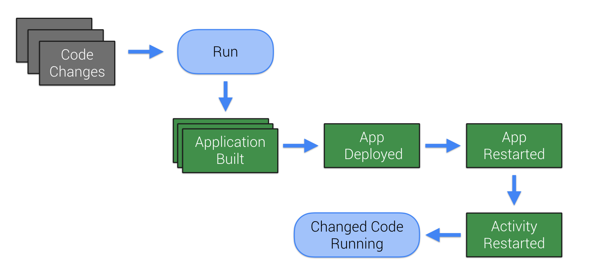
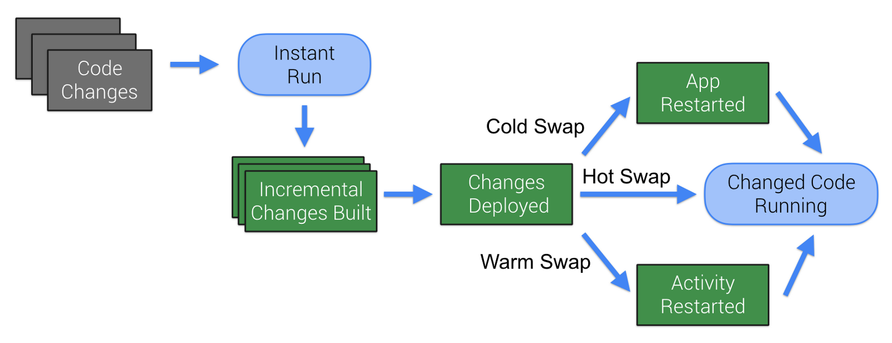
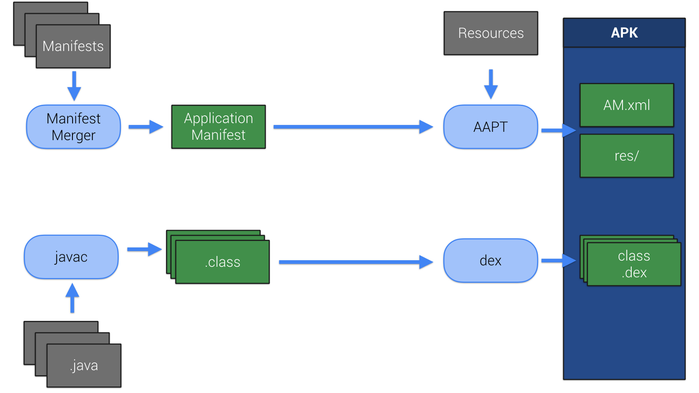
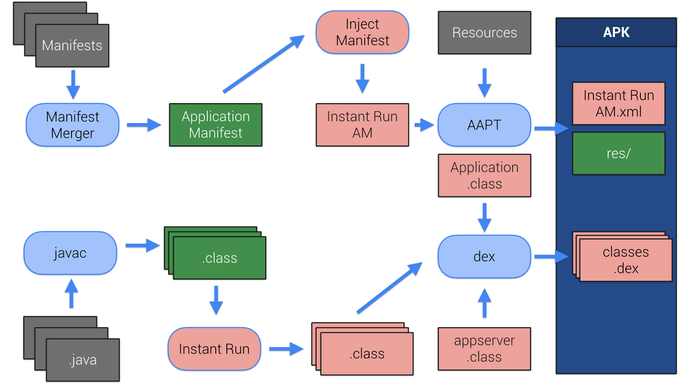
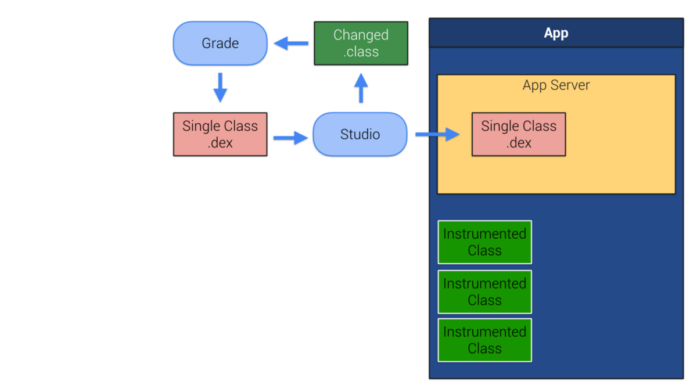

Instant Run，Android Studio的一项神奇的功能，用于减少增量代码的构建和部署时间。它看起来很神奇。你首次运行或者调试，你就如你预期般的那样工作，之后每次代码的改动，会花很少的时间去构建和部署
原理
构建图

Instant Run的目标很简单
移除尽可能多的步骤，使剩下的东西尽可能快
具体是:
- 只构建和部署新增的东西
- 不重新安装应用
- 不重新启动应用
- 不重新启动
Activity
热部署，温部署，冷部署

热部署: 部署新的改变，不需要重新应用，甚至不需要重启当前Activity。能用于方法内简单的改变
温部署: Activity需要重启后，新的改变才能生效。通常用于资源改变
冷部署: 应用重启，但不重新安装。任何结构型变化，如继承关系或者方法签名会使用冷部署
打包流程

manifest文件被合并，打包。伴随着资源一起打包进APK。java源代码被编译成字节码，转换成.dex文件。它们也会打包进入APK
首次点击运行或调试(Instant Run打开), Gradle做的额外操作

字节码被添加到.class文件中，一个新的App Server类被注入到app中
一个新的Application类定义也被加入到App，注入自定义类加载器以及将启动App Server。一般来说，manifest会被修改以便app能使用(如果你创建了自己的Application类，Instant Run版本会代理这个Application类)
这时Instant Run运行了。因此如果你改变了代码，Instant Run会尝试避免使用热，温，冷部署来避免全构建
应用
Instant Run改变之前，as会检查Instant Run内是否有一个打开的Socket连接着App Server
热部署

as监控开发过程中哪些字段被修改了。运行自定义Gradle任务来未修改的类生成.dex文件
这些新.dex文件被as挑选，并部署到app中的App Server
由于类的原始版本已经存在了，Gradle转换更新版本以便高效覆盖这些之前存在的类。转换结束，更新的类被App Server使用自定义的类加载器加载。
从现在起，每次方法被调用，这个注入到原始类文件中的监控类都会检查是否已经更新。如果更新了，那么后续操作会代理到新的覆盖类中。
温部署
温部署重启Activity。当Activity启动，资源被加载。因此更新资源需要重启Acitivty以便强制资源重新加载
当前，任何资源的改变会导致，所有的资源被重新打包到app，但使用增量打包器会只打包和部署更改的资源
注意温部署对于
manifest的改变是无效的，因为manifest信息的读取实在apk安装的时候。manifest的改变会触发全量构建和部署
冷部署
部署后，app和其子项目被分成10个片段，每个片段有自己的dex文件。类安装它们的包名分割。使用冷部署，修改类会要求所有其他在相同片段中的类重新加载。
这个策略依赖于运行时加载多个dex文件的能力。5.0以上采用ART具备这种能力。之下会采用全量构建部署
Instant Run技巧和提示
manifest的修改会导致全量构建部署Instant Run值监控主进程，如果app使用多进程。热部署和温部署在其他进程中会降到冷部署，如果低于5.0，会采用全量构建部署Windows防火墙可能会导致Instant Run无法启动Instant Run不支持Jack编译器